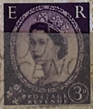
| SOURCE | TITLE| IMAGE MATCH | click to source page |
| eBay | Vintage E R Wilding Queen Elizabeth II Postage Stamp Purple 1957 England Rare | eBay | 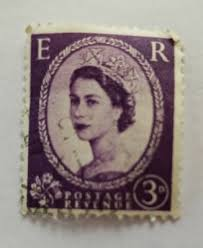 |
| eBay | Vintage E R Wilding Queen Elizabeth II Postage Stamp Purple 1957 England Rare | eBay | 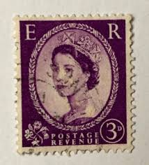 |
| eBay | Great Britain - 1955 -1957 - Queen Elizabeth II - 3D - Used - #04 | eBay | 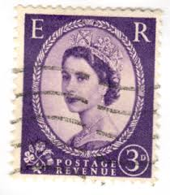 |
| eBay UK | Rare English Postage Stamps | eBay UK | 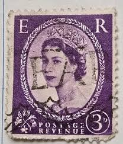 |
| Mystic Stamp Company | 358 - 1958 Great Britain - Mystic Stamp Company | 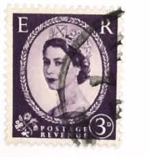 |
| PicClick | 1965 QUEEN ELIZABETH ER Postage Revenue 4D Stamp Rare White Variety $246.99 - PicClick | 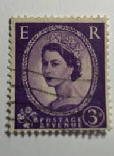 |
| eBay | Purple Royalty Elizabeth II (1952-2022) Era Canadian Stamps for sale | eBay | 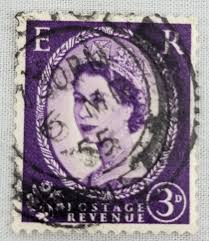 |
| Colnect | Stamp: Queen Elizabeth II - Predecimal Wilding (United Kingdom of Great Britain & Northern Ireland(Queen Elizabeth II - Predecimal Wilding) Mi:GB 323xX,Sn:GB 358,Yt:GB 331,Sg:GB 575,AFA:GB 317,Un:GB 331 📮 | 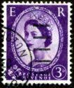 |
| eBay Australia | Vintage queen elizabeth stamp/ purple/ E R/ collectible/ | eBay Australia | 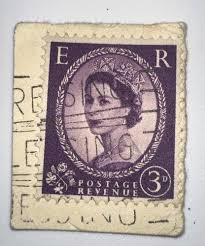 |
| Dreamstime.com | Vintage Queen Elizabeth II Postage Stamp Editorial Image - Image of long, england: 85355810 | 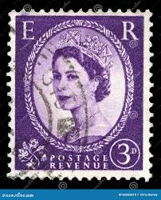 |
| HipStamp | Great Britain 358_4 - Queen Elizabeth II - inverted watermark | Great Britain, General Issue Stamp / HipStamp | 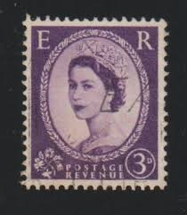 |
| Dreamstime.com | Used British Postage Stamp from the Queen Elizabeth II Series Editorial Stock Image - Image of elizabeth, postage: 217916089 | 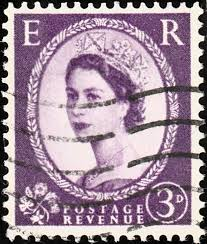 |
| Etsy | Vintage ER Wilding Queen Elizabeth II 3cent Purple - Stamp Canceled Hinged - Etsy | 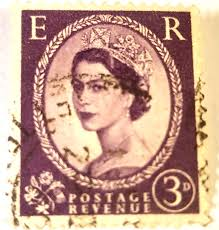 |
| eBay | Machine Cancel Decimal British Elizabeth II Stamps for sale | eBay | 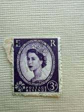 |
| eBay | Postage Revenue Stamp for sale | eBay | 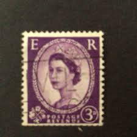 |
| HipStamp | Great Britain, Scott #358c, used(o), 1958, Wilding graphite, Elizabeth II, 3d | Great Britain, General Issue Stamp / HipStamp | 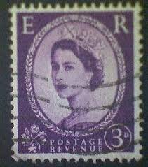 |
| eBay | Preços baixos em Roxo Selos britânicos Elizabeth II | eBay | 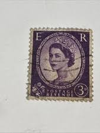 |
| PicClick UK | COLLECTABLE RARE QUEEN Elizabeth II 1959 Postage Revenue Stamp Purple. £65.00 - PicClick UK | 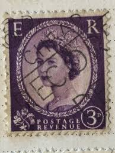 |
| HipStamp | Great Britain #297 3p Queen Elizabeth II | Great Britain, General Issue Stamp / HipStamp | 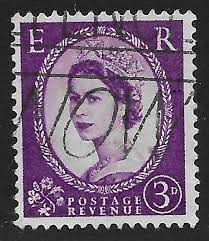 |
| Mercari | Vintage ER Wilding Queen Elizabeth ll Purple | Mercari | 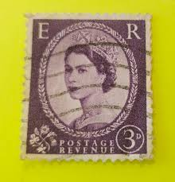 |
| Dreamstime.com | Queen Elizabeth Coronation Anniversary Editorial Photography - Image of look, canvas: 108798842 | 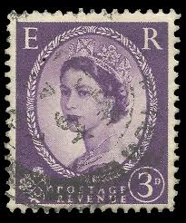 |
| Find Your Stamps Value | Value of queen elizabeth 3p stamps | 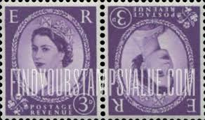 |
| eBay | Vintage E R Wilding Queen Elizabeth II Postage Stamp Purple 1957 England Rare | eBay | 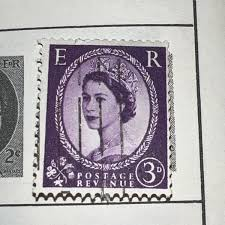 |
| eBay | Elizabeth II Used 3d Stamps for sale | eBay | 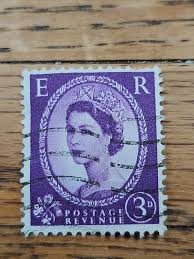 |
| iStock | British Vintage Queen Elizabeth Ii Postage Stamp Stock Photo - Download Image Now - Black Background, British Culture, British Royalty - iStock | 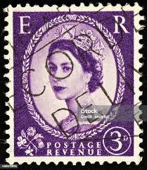 |
| eBay | Great Britain Stamp 1952-1954 Featuring Queen Elizabeth II 3p Violet Used | eBay | 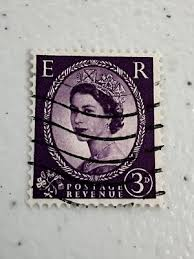 |
| Mystic Stamp Company | 358p - 1960 Great Britain - Mystic Stamp Company | 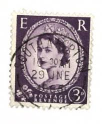 |
| Shutterstock | 3+ Hundred Born 1952 Royalty-Free Images, Stock Photos & Pictures | Shutterstock | 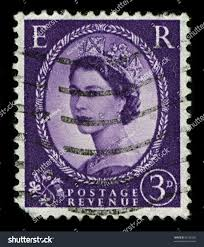 |
| PicClick UK | QUEEN ELIZABETH 3 D Postage Er Purple Stamp Used £1.45 - PicClick UK | 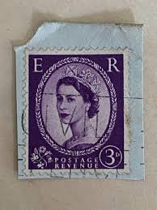 |
| pete grafton | November 2014 – pete grafton | 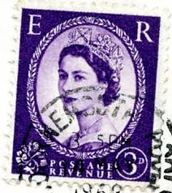 |
| eBay | Perfin Great Britain Used Stamp A25P44F19817 | eBay | 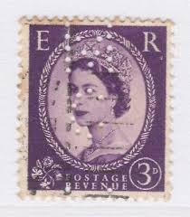 |
| eBay | UK - 1955 - Queen Elizabeth II - 3D - #2580 | eBay | 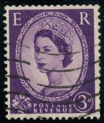 |
| eBay | Pre-Decimal Used British Elizabeth II Stamps for sale | eBay | 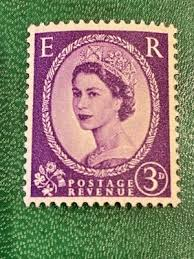 |
| Alamy | Queen elizabeth postage stamp, uk, 2021 hi-res stock photography and images - Alamy | 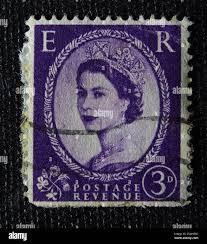 |
| Old-Stamps.com | King George VI, Elizabeth Bowes-Lyon - 12 / 1937 | 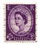 |
| eBay | GB QEII 1957 3d Deep Lilac Graphite Wilding Issue SG566 Good Used FREEPOST | eBay | 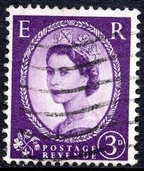 |
| Poppe Stamps | Poppe Stamps: Great Britain, 1952, 575, Queen Elizabeth Ii, National Symbols, Emblems, National Emblems - stamps for sale by theme and country | 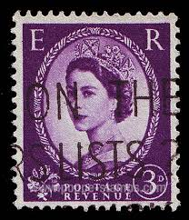 |
| Shutterstock | 4+ Hundred Queen Elizabeth Ii Young Royalty-Free Images, Stock Photos & Pictures | Shutterstock | 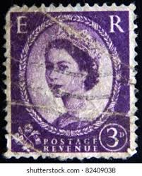 |
| eBay | Machine Cancel Decimal Used British Elizabeth II Stamps for sale | eBay | 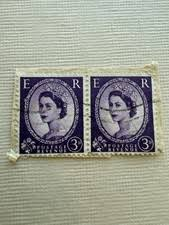 |
| commonwealthstamps.com | Stamps Great Britain 1955 Queen Elizabeth II Definitive SG 545 Fine Used Scott 322 | 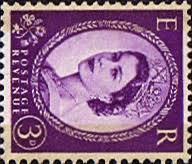 |
| eBay | Great Britain 1956 QEII 3d Deep Lilac Stamps | eBay | 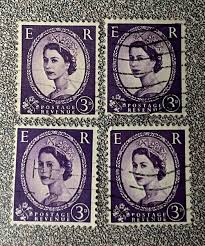 |
| eBay UK | Royalty Used Great Britain Elizabeth II Stamps for sale | eBay UK | 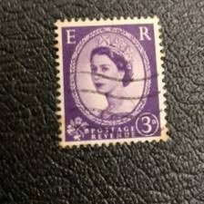 |
| Alamy | Postage stamp 3 pence hi-res stock photography and images - Alamy | 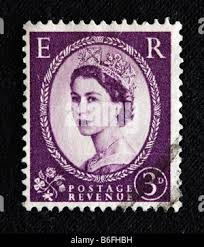 |
| BB Stamps | Decimal Wildings – Great British Stamps 1840 to DATE. Mint & Used GB Stamps | 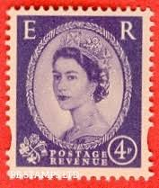 |
| eBay | 3D Multiple Crowns Wilding Unmounted Block Of 4 unused | eBay | 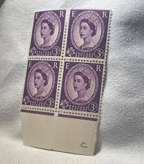 |
| Alamy | Queen elizabeth ii 1965 hi-res stock photography and images - Alamy | 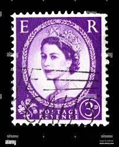 |
| Shutterstock | Stamp Uk: Over 11,970 Royalty-Free Licensable Stock Photos | Shutterstock | 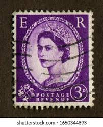 |
| Shutterstock | Karnal Haryana India -july 30th 2025- Stock Photo 2668735593 | Shutterstock | 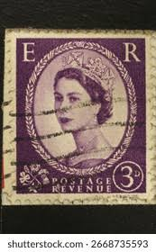 |
| HipStamp | Great Britain, Scott #322, used(o), 1956, Wilding: Queen Elizabeth II, 3d | Great Britain, General Issue Stamp / HipStamp | 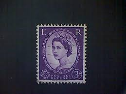 |
| HipStamp | Great Britain, Scott #322, used(o), 1956, Wilding: Queen Elizabeth II, 3d | Great Britain, General Issue Stamp / HipStamp | |
| HipStamp | Great Britain, Scott #297, used(o), 1954, Wilding: Queen Elizabeth II, 3d | Great Britain, General Issue Stamp / HipStamp | |
| eBay | Great Britain - Queen Elizabeth II - Predecimal Wilding ( One Line ) | eBay | |
| PicClick | 3D ER POSTAGE Revenue Stamp Queen Elizabeth II Great Britain 1955 $49.99 - PicClick | |
| HipStamp | G.Britain 1952-54 (2for1)- QE II 3d - used | Great Britain, Stamp / HipStamp | |
| Alamy | Postage stamp great britain queen hi-res stock photography and images - Page 14 - Alamy | |
| eBay | Queen Elizabeth II 3 D Postage Revenue Purple/Violet | eBay | |
| eBay | Perfins Great Britain GB 1952, Pair QE II Three Pence CC. Sc297 | eBay | |
| eBay | AOP BPAEA 1952 3an used in DOHA QATAR SG 47 | eBay | |
| commonwealthstamps.com | Stamps of the Falkland Island Dependencies Graham Land South Shetlands South Orkneys South Georgia in date order - Page 2 | |
| eBay | QUEEN ELIZABETH II Postage Revenue Stamps Set of 36 | eBay |